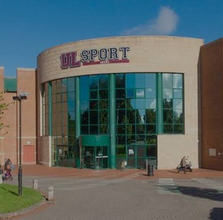
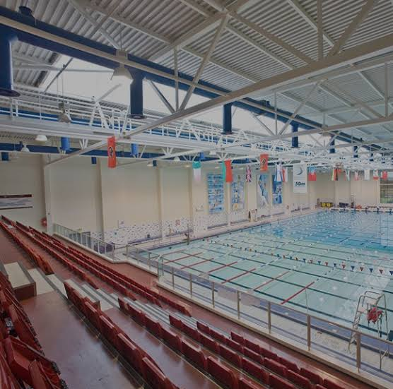
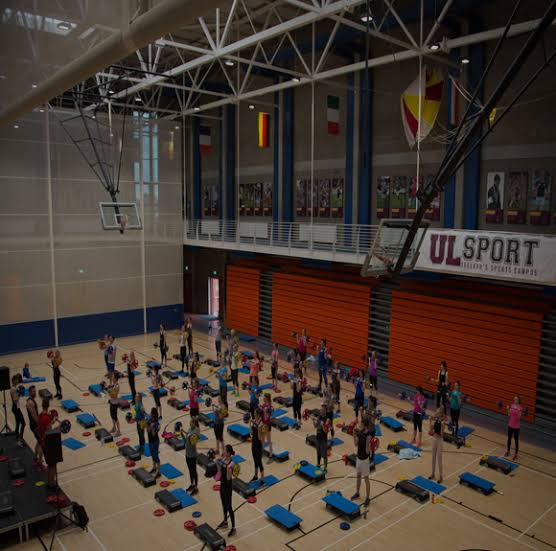
UL Sport Arena
Ireland's flagship sports campus, home to a 50m Olympic-size pool, a large sports hall and busy fitness classes. A great place to get active, whatever the weather.
Explore our curated list of places. From hidden gems to iconic landmarks, find your next adventure here.



Ireland's flagship sports campus, home to a 50m Olympic-size pool, a large sports hall and busy fitness classes. A great place to get active, whatever the weather.
A lively courtyard at the heart of campus with cafés, bars and a relaxed social atmosphere. The perfect spot to meet friends, grab a bite or unwind after a busy day.
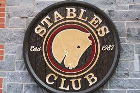
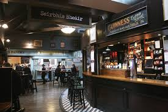
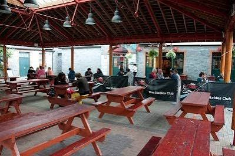
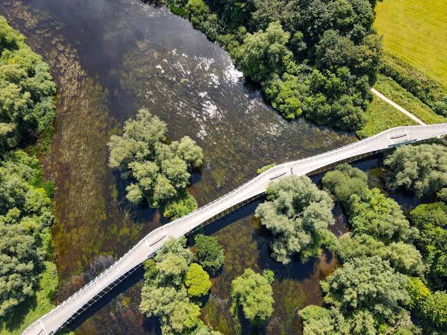
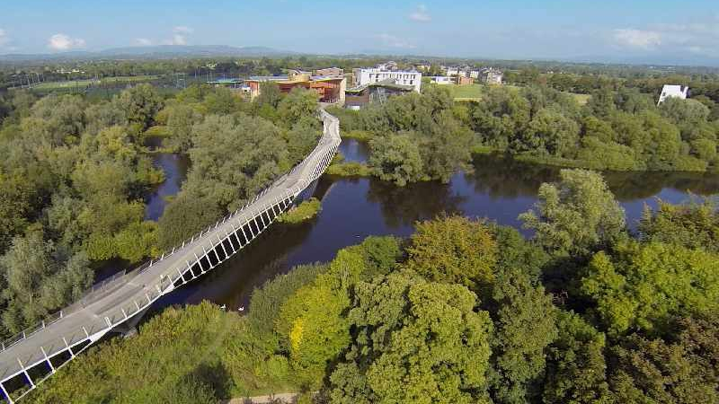
Ireland's longest river flows right alongside the campus. Enjoy calm riverside walks, open skies and beautiful views, especially at sunset. A graceful pedestrian bridge spanning the River Shannon, linking the Limerick and Clare sides of the UL campus. At roughly 350 metres, it is Ireland's longest footbridge, and it's a favourite spot for scenic walks, river views and photos.
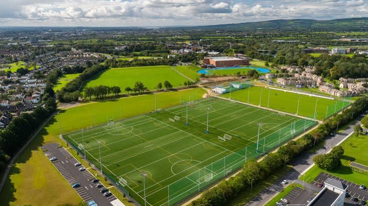
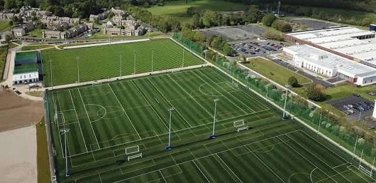
Wide, well-kept outdoor pitches where campus teams train and play. Expect big green spaces, match-day energy and plenty of room to kick a ball around.
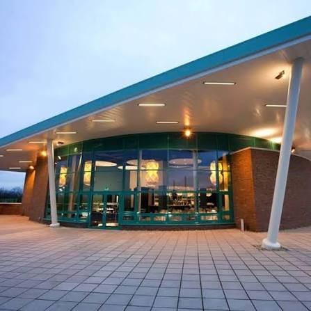
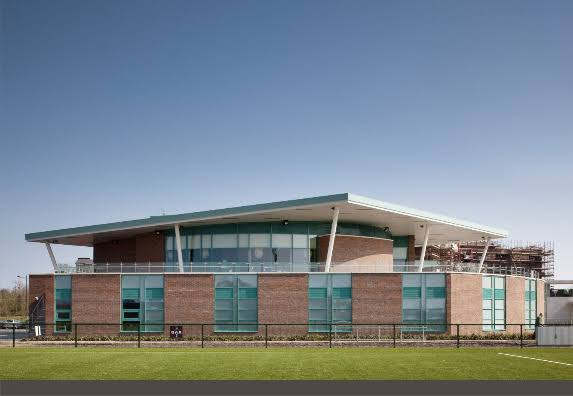
A friendly gathering place beside the sports grounds, ideal for catching a game, meeting up or relaxing with a drink and a view of the action.
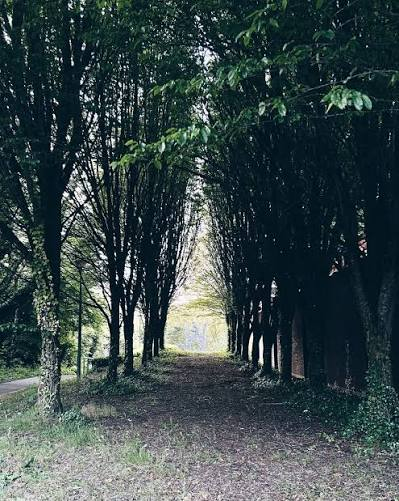
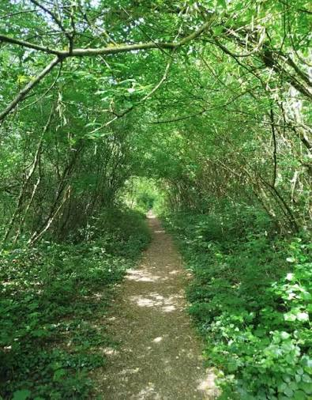
Peaceful tree-lined trails tucked beside the campus. Perfect for a quiet walk, a jog or a breath of fresh air between lectures.